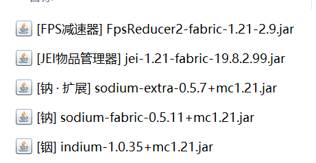
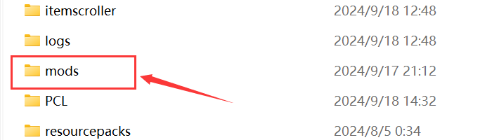
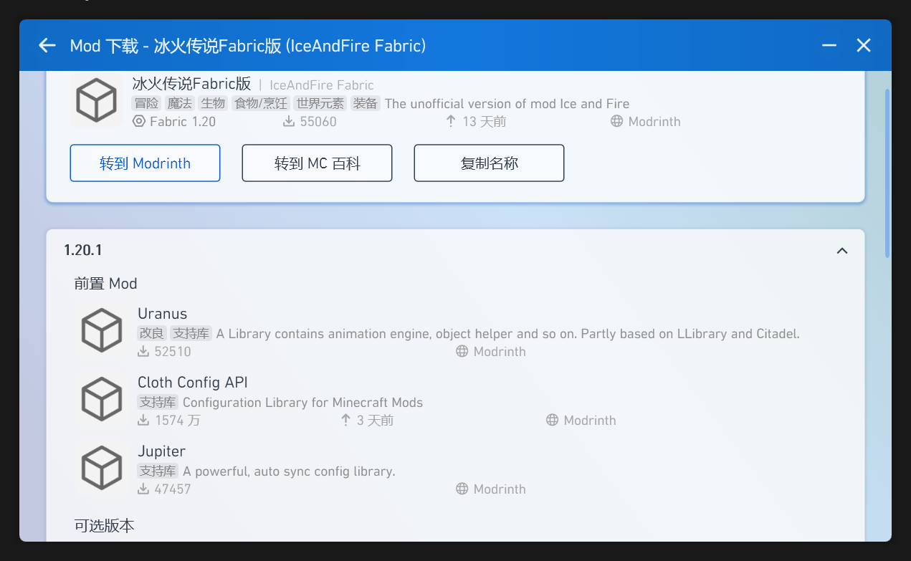
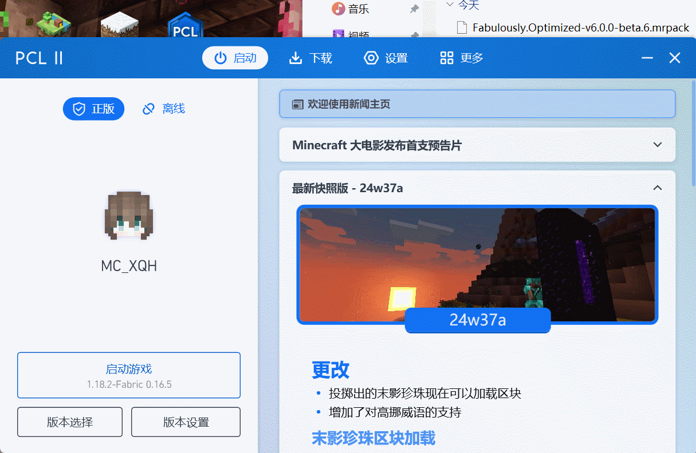

MOD模组、整合包安装
*关于模组加载器的历史变更，感兴趣的可以在 加载器Mod - 中文 Minecraft Wiki 页面上查看。
零、序
模组安装主要包括 部署模组加载器 和 下载模组。
目前主流的模组加载器有两种—— Fabric 和 Forge。绝大部分的模组都是在这两个模组加载器运行的。
Forge 与 Fabric 各有特色：
- Forge 是发展时间最久的、构建模组数量最多的加载器，许多知名的大型模组最初都是在 Forge 上构建的。但 Forge 对于性能影响较大，且由于会自主修复一些原版的特性（例如 刷线机、部分版本的TNT复制）的原因，对于利用原版特性的生电玩法并不友好；
- Fabric 是 1.14版本 出现的轻量化的模组加载器。与 Forge 相比，Fabric 的优化更为出色，且不会修复一些原版的特性，但大型模组（尤其是具有 玩法扩展性 的模组）大多都不支持在其运行，且由于其轻量化的特性，为实现与 Forge 相同的特性，玩家可能需要安装多个依赖库模组。
因此，对于主玩扩展玩法的玩家，更为推荐使用 Forge；对于以 原版玩法 为核心，对 性能优化 有所追求的玩家，更为推荐使用 Fabric。
模组对于游戏最主要影响方面是在 内存要求 上。正常来说，添加的模组数量越多，游戏所需要的内存大小越大（一些内存优化模组除外）。大多数的 整合包 对于内存的要求至少要4G以上。因此，在挑选模组时候，请结合自身电脑内存配置，酌情考虑。
模组加载器的安装步骤大同小异，因此 其他的模组加载器 如：Quilt 和 NeoForge，这里就不详细介绍了。
一、安装模组加载器
1. 开启版本隔离（推荐）
在安装模组加载器之前，还要先进行一些配置。
在安装完模组加载器并首次运行之后，模组加载器就会在 .minecraft 目录里面新建一个 mods 文件夹。这个文件夹就是之后放模组的地方了。但正常情况下，启动器默认是不开启版本隔离 的设置。如果之后下载另一个模组加载器的版本，两个模组加载器都会读取同一个 mods 文件夹。
而不同版本的模组是不能运行在同一个加载器上的。如果要下载不同的模组加载器，就需要将不同版本的模组加载器读取 各自的 mods 文件夹，让每个模组加载器都有一个独立运行的环境。
那么这时候就要开启版本隔离了。
版本隔离有两种开启方式：
- 全局版本隔离：在启动器的 设置 → 游戏 → 版本隔离 可以找到。正常我们会选择 隔离可安装 Mod 的版本与非正式版，这样启动器会将所有符合条件的mc版本开启版本隔离。
- 单独版本隔离：在启动器的 版本选择 里，选择你要隔离的版本，点击卡片右侧的 “齿轮”按钮 打开版本设置界面。找到 设置 → 启动选项 → 版本隔离，我们就可以对该版本单独进行隔离设置了。
开启版本隔离之后，启动器会在原 .minecraft 文件夹里的 versions 文件夹中，在相应游戏版本的文件夹中，再新建一个独属于该版本的 .minecraft 文件夹，以此实现版本隔离。
2. 使用启动器自动安装
这里以PCL2启动器为例。
打开PCL2启动器，选择 下载 → 自动安装，先选择你要游玩的版本，选择之后，这里就有下载 Forge 和 Fabric 的选项。安装 稳定版 的 Fabric 或 Forge 版本，选择好后点击 开始安装，静待下载就好了。

其他主流启动器也都可以实现自动安装，步骤都和这里差不多。
注：Fabric上大部分模组的运行还需要依赖一个 Fabric API 的模组，大多数启动器的 Fabric 自动安装都会连同 Fabric API 一起下载安装。如果你的某些模组无法正常运行，可以去检查 Fabric API 的版本。
二、下载模组
模组文件通常是 jar 文件类型。

要让游戏能够加载模组，就要将该模组放在 mods 文件夹里。

模组下载的途径有很多。这里我们以下载 Sodium 模组为例。（Sodium 是基于 Fabric 的一个性能优化模组，能够很显著的提高游戏帧数）
1. 通过启动器下载
打开PCL2启动器，选择 下载 → Mod → 搜索 Mod，输入 sodium，点击搜索。找到 Sodium 模组，选择对应的版本，点击 保存。之后PCL2启动器将该模组下载在 你在主界面选中的版本的 对应 mods 文件夹里。

但有些模组的运行需要依赖于另一些模组，你可以在该模组的版本下载页面里看到 它所依赖的模组。

2. 手动下载
目前主流的模组发布网站都是在 CurseForge 和 Modrinth 上，当然也有些模组的测试版可能会预先发布在 模组作者的个人Github 上。
你也可以去 MCMOD百科 上查找你所要下载的模组的下载地址。
把从这些网站上下载过来的 模组文件 放到对应版本的 mods 文件夹里就行了。
三、安装整合包
整合包并不是简单的.minecraft文件压缩包，通常情况下，一个整合包所拥有的模组数量超过200个是常态，且为了让这些模组能够互相兼容和有机联动，整合包作者通常都会更改一些模组的配置文件。因此为了压缩文件大小，整合包里面大部分都是 模组的 下载地址 文件及其 配置文件。因此，整合包的安装是要在 启动器 里进行的。
整合包的文件格式和类型不尽相同，但启动器都能够识别出来的。
你可以在启动器里搜索整合包的名字并直接下载。
整合包的手动安装也十分简单。将你下载到的整合包拖动进启动器里就行了，启动器会自动下载和部署游戏版本和模组文件，且会自动对该整合包启动版本隔离。

仍有不理解的地方或问题？在文章的相应位置评论留言↑↑↑
或在Github上反馈文章问题。